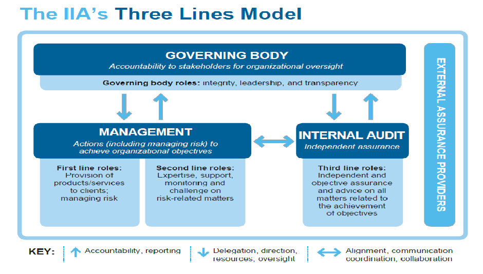
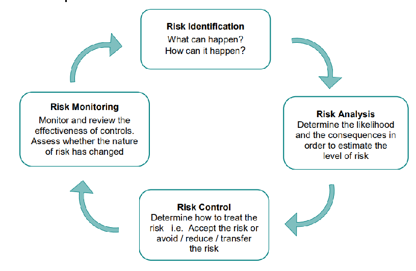
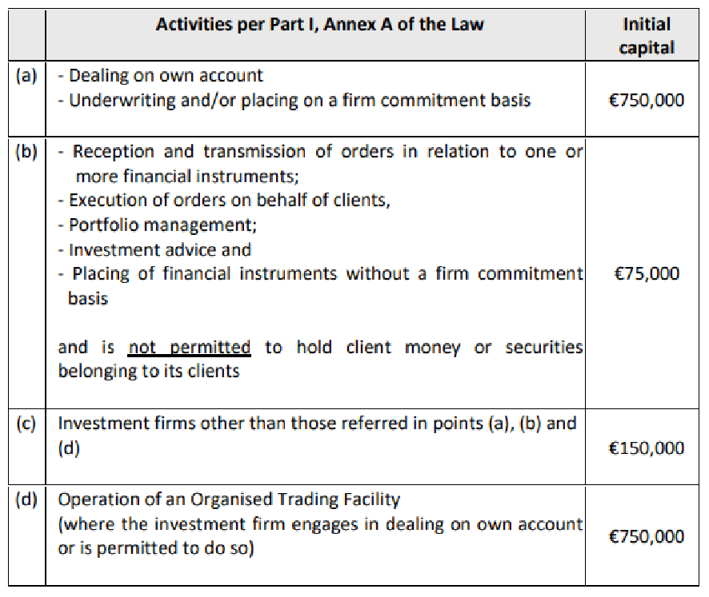
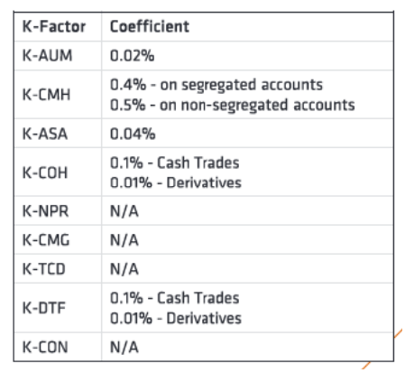

DISCLOSURE
The Disclosure and Market Disciple Report for the year 2025 has been prepared by Luna Wealth Asset Management Ltd as per the requirements of Regulation (EU) 2019/2033 issued on 27 November 2019 by the European Commission and the Directive EU 2019-2034. Luna Wealth Asset Management Ltd states that any information that was not included in this report was either not applicable on the Company’s business and activities -OR- such information is considered as proprietary to the Company and sharing this information with the public and/or competitors would undermine our competitive position.
Luna Wealth Asset Management Ltd is regulated by the Cyprus Securities and Exchange Commission under License number 379/19.
Contact Us
Address: 4 Foti Pitta, 9th Floor, Labs Tower, 1065, Nicosia
Tel: +357 22007111
Fax: -
Website: www.lunawealth.com
Email: info@lunawealth.com
The Board of Directors holds ultimate accountability for overseeing the Company's Risk Management Framework. This framework encompasses the integrated set of systems, policies, procedures, and personnel responsible for identifying, evaluating, mitigating, and continuously monitoring all risk exposures that may materially affect the Company's operations.
The Board of Directors formally endorses the adequacy of the Institution's risk management arrangements, providing assurance that the established systems and controls are appropriate and proportionate to the Institution's overall risk profile and strategic objectives.
1. Introduction
1.1. Investment Firm
Table 1: Company Information
| CIF Authorization date | 23/08/2019 |
|---|---|
| CIF license number | 379/19 |
| Company Registration Date | 06/12/2017 |
| Company Registration Number | HE 377224 |
| Investment Services | |
| Reception and transmission of orders in relation to one or more financial instruments | |
| Execution of orders on Behalf of Clients | |
| Dealing on Own Account | |
| Portfolio Management | |
| Provision of investment advice | |
| Ancillary Services | |
| Safekeeping and administration of financial instruments, including custodianship and related | |
| services | |
1.2. Purpose
This report is prepared by Luna Wealth Asset Management Ltd (the "Company"), a Cyprus Investment Firm ("CIF") authorised and regulated by the Cyprus Securities and Exchange Commission ("CySEC" or the "Commission") under license number 379/19, operating in compliance with the Markets in Financial Instruments Directive II ("MiFID II").
Pursuant to Regulation (EU) 2019/2033 (the Investment Firms Regulation, "IFR"), introduced in late 2019, the Company is obliged to disclose information pertaining to its risk exposures and risk management practices, capital structure and adequacy, as well as key characteristics of its governance arrangements, including remuneration policies and practices. The primary objective of this report is to foster market discipline and enhance transparency among market participants.
This document is reviewed and published on an annual basis; however, more frequent publication may occur in the event of material changes to the business, such as modifications to the scale of operations or the range of activities conducted. CySEC is responsible for implementing and enforcing the European Investment Firms Directive 2019/2034 ("IFD"), a capital adequacy framework built upon three pillars:
- Pillar I establishes minimum requirements covering regulatory capital, liquidity buffers and concentration risk limits.
- Pillar II requires firms to maintain sound, effective and comprehensive arrangements, strategies and processes to assess and sustain, on an ongoing basis, the amounts, types and distribution of internal capital and liquid assets deemed sufficient to cover the risks to which they are exposed or pose. This is accomplished through the Internal Capital and Risk Assessment process ("ICARA").
- Pillar III complements Pillars I and II by reinforcing market discipline through mandatory disclosure of information on capital resources, Pillar I capital requirements, risk exposures and the firm's risk management framework.
The IFR/IFD prudential regime introduces revised requirements relating to capital, liquidity, reporting, disclosure, governance, remuneration and the supervision of investment firms, replacing the previously applicable CRR/CRD and MiFID rules. The overarching aim of this framework is to establish more proportionate and risk-sensitive regulatory standards for investment firms. Under this regime, the majority of EU investment firms will no longer be subject to rules originally designed for credit institutions. The largest and most systemically significant investment firms, however, will continue to be governed by the same prudential framework applicable to European banks (i.e. CRR and CRD). The IFR/IFD regime applies to all MiFID-authorised investment firms.
The 2025 Pillar III Disclosure Report presents both quantitative and qualitative information as required under Part 6 of the IFR, and in particular Articles 46 to 53, which establish the applicable disclosure requirements.
The information contained in this Pillar III Market Discipline and Disclosure Report is subject to review by the Company's external auditor and is published annually on the Company's website at www.lunawealth.com.
The Board of Directors and Senior Management bear overall responsibility for the internal control systems underpinning the capital adequacy assessment process. They have implemented effective procedures to ensure that the full spectrum of risks faced by the Company is appropriately identified, measured, monitored and controlled, with a view to minimising adverse outcomes.
The Company's operational effectiveness is guided by its risk management policies and procedures. The Board of Directors, Internal Audit function, Risk Manager, Compliance Officer and Anti-Money Laundering Officer collectively oversee the risk management framework to ensure that all units responsible for risk management fulfil their respective roles on a continuous and effective basis.
In common with all Class 2 Investment Firms, the Company is exposed to a range of risks, including Risk to Market, Risk to Firm and Risk to Client. Further details are provided in the sections that follow.
This Market Discipline and Disclosure Report is prepared and published on a solo basis.
1.3. The Company
Luna Wealth Asset Management Ltd is a Cyprus Investment Firm ("CIF") regulated by CySEC, delivering a comprehensive suite of financial services including discretionary portfolio management, investment advisory, and brokerage services, with a primary focus on high-net-worth individuals. The Company operates from its offices in Cyprus with a dedicated team of 12 professionals.
The Company is underpinned by a resilient and well-structured business model, as evidenced by:
- A disciplined and well-balanced allocation of capital across its operations, ensuring efficient resource deployment and financial stability.
- A diversified business model spanning multiple jurisdictions, with a broad and balanced exposure across counterparties and client markets, reducing concentration risk and enhancing long-term sustainability.
The Company's growth strategy is anchored in its core areas of expertise and its commitment to maintaining a high-quality, discerning client base. Luna Wealth Asset Management Ltd pursues sustainable profitability in line with its cost of capital, guided by a prudent and balanced approach to business development. In pursuit of this objective, the Company:
- Actively manages and seeks to contain the volatility of its financial results, ensuring consistency and predictability in performance.
- Calibrates its capital ratios with discipline, maintaining a meaningful safety margin well above minimum regulatory thresholds.
- Maintains robust liquidity buffers to ensure sufficient resilience under stress scenarios and periods of liquidity constraint.
- Exercises rigorous control over foreign exchange exposures, minimising currency risk across its operations and client portfolios.
The Company is committed to cultivating and maintaining a diversified and well-balanced client base, mitigating concentration risk while broadening its market presence across key jurisdictions.
Compliance and regulatory integrity are central to the Company's operating philosophy. Luna Wealth Asset Management Ltd upholds the highest standards of regulatory adherence, with particular emphasis on anti-money laundering ("AML") and counter-terrorism financing ("CTF") obligations. The conduct of employees in relation to clients and all stakeholders is continuously monitored, alongside the integrity of the Company's investment and financial practices.
The Company regards its reputation as one of its most valued and strategically significant assets — one that must be actively safeguarded to ensure its continued growth and long-term sustainable development. The identification, prevention and mitigation of reputational risk are embedded across all operational practices and decision-making processes. Luna Wealth Asset Management Ltd fosters a culture of accountability, ethical conduct and professional commitment, ensuring that all employees understand and uphold the values that define the Company's standing in the market.
1.4. Regulatory Supervision
The minimum capital requirements as at 31 December 2025 have been calculated in accordance with the Pillar I rules as prescribed by the applicable Laws and Regulations issued by CySEC. All Cyprus Investment Firms ("CIFs") operating under CySEC's supervisory authority are required to comply with the capital adequacy and market discipline obligations set out under the following legislative and regulatory framework:
- Law 87(I)/2017: Law on the Provision of Investment Services, the Exercise of Investment Activities, the Operation of Regulated Markets and Other Related Matters (the "Law")
- Law 165(I)/2021: Law on the Prudential Supervision of Investment Firms
- Regulation (EU) 2019/2033 – Investment Firms Regulation ("IFR")
- Regulation (EU) No. 575/2013 – Capital Requirements Regulation ("CRR")
- Regulation (EU) No. 648/2012 – European Markets Infrastructure Regulation ("EMIR")
- Regulation (EU) 2019/2088 – Sustainability-Related Disclosures in the Financial Services Sector ("SFDR")
- Directive 2013/36/EU – Capital Requirements Directive IV ("CRD IV"), on access to the activity of credit institutions and the prudential supervision of credit institutions and investment firms, amending Directive 2002/87/EC and repealing Directives 2006/48/EC and 2006/49/EC
- Directive (EU) 2019/2034 – Investment Firms Directive ("IFD")
- Regulation (EU) 596/2014 — Market Abuse Regulation (MAR)
- Directive 2014/65/EU (MiFID II)
1.5 Risk Management Objectives and Policies
The Company's risk management governance is structured around the IIA's Three Lines Model, which represents an evolution of the traditional Three Lines of Defense framework. This model refines and reinforces its foundational principles, expands its scope, and articulates how key organisational roles interact to deliver robust governance and effective risk management across the organisation.
The Three Lines Model provides Luna Wealth Asset Management Ltd with a clear and coherent structure for identifying the systems and processes that best support the achievement of its strategic objectives, while simultaneously strengthening its governance and risk oversight capabilities. The model is universally applicable across all organisational functions and is optimised through the following principles:
- Principles-Based Adaptability: The model is applied on a principles-based basis, allowing it to be tailored to the Company's specific objectives, risk appetite and operational circumstances, ensuring relevance and practicality at all levels of the organisation.
- Value Creation and Protection: Rather than focusing solely on defensive measures, the model emphasises the positive contribution that effective risk management makes to value creation and the achievement of strategic objectives, while equally safeguarding the Company's assets and reputation.
- Clarity of Roles and Responsibilities: Each line of the model carries clearly defined roles and responsibilities, with well-established relationships between them, ensuring accountability, eliminating ambiguity and promoting coordinated risk oversight.
- Stakeholder Alignment: The model is supported by robust measures to ensure that all activities and objectives remain consistently aligned with the prioritised interests of the Company's stakeholders, reinforcing trust, transparency and long-term value.
The diagram below illustrates the Three Lines Model as adopted by the Company:
| Principles of Three Lines Model | ||||
| Principle | Summary Description | Associated Role(s) | ||
| 1) Governance | 1) Governance | Appropriate structures and processes are | • Governing Body • Management • Internal Audit | • Governing |
|---|---|---|---|---|
| established to enable clear accountability | Body | |||
| by the Governing Body to stakeholders, | • Management | |||
| informed risk-based decision-making by | • Internal Audit | |||
| Management in pursuit of organisational | ||||
| objectives, and independent assurance | ||||
| and advisory services provided by the | ||||
| Internal Audit function. | ||||
| 2) Governing body roles | The Governing Body is responsible for | • Governing Body | ||
| ensuring that effective governance | ||||
| structures and processes are in place, that | ||||
| organisational objectives and activities | ||||
| remain aligned with the prioritised | ||||
| interests of stakeholders, and that | ||||
| responsibility and adequate resources are | ||||
| delegated to Management. The | ||||
| Governing Body also establishes and | ||||
| oversees an independent and objective | ||||
| Internal Audit function. | ||||
| 3) Management and first-and second line roles | Management bears overall responsibility | • Management |
|---|---|---|
| for achieving organisational objectives, | ||
| encompassing both first and second line | ||
| roles. First line roles are directly aligned | ||
| with the delivery of products and | ||
| services to clients, whilst second line | ||
| roles provide specialist expertise, support | ||
| and challenge in the identification and | ||
| management of risk. | ||
| 4) Third Line roles | The Internal Audit function delivers | • Internal Audit |
| independent and objective assurance and | ||
| advisory services on the adequacy, | ||
| accuracy and effectiveness of the | ||
| organisation's governance framework | ||
| and risk management practices. | ||
| 5) Third line independence | The independence of Internal Audit from | • Internal Audit |
| Management's operational | ||
| responsibilities is fundamental to | ||
| preserving its objectivity, authority and | ||
| credibility as an assurance provider. | ||
| 6) Creating and protecting value | Protecting ValueWhen all three lines | • Governing Body • Management • Internal Audit |
| operate in alignment with one another | ||
| and with the prioritised interests of | ||
| stakeholders, they collectively and | ||
| synergistically contribute to the creation, | ||
| preservation and protection of | ||
| organisational value. | ||
Key Roles in the Three Lines Model
The governing body
- Accepts accountability to stakeholders for oversight of the organization.
- Engages with stakeholders to monitor their interests and communicate transparently on the achievement of objectives.
- Nurtures a culture promoting ethical behaviour and accountability.
- Establishes structures and processes for governance, including auxiliary committees as required.
- Delegates responsibility and provides resources to management for achieving the objectives of the organization.
- Determines organizational appetite for risk and exercises oversight of risk management (including internal control).
- Maintains oversight of compliance with legal, regulatory, and ethical expectations.
- Establishes and oversees an independent, objective, and competent internal audit function.
Management
First line roles
- Leads and directs actions (including managing risk) and application of resources to achieve the objectives of the organization.
- Maintains a continuous dialogue with the governing body, and reports on: planned, actual, and expected outcomes linked to the objectives of the organization; and risk.
- Establishes and maintains appropriate structures and processes for the management of operations and risk (including internal control).
- Ensures compliance with legal, regulatory, and ethical expectations. Second line roles
- Provides complementary expertise, support, monitoring, and challenge related to the management of risk, including:
- The development, implementation, and continuous improvement of risk management practices (including internal control) at a process, systems, and entity level.
- The achievement of risk management objectives, such as: compliance with laws, regulations, and acceptable ethical behavior; internal control; information and technology security; sustainability; and quality assurance.
- Provides analysis and reports on the adequacy and effectiveness of risk management (including internal control).
Internal audit
- Maintains primary accountability to the governing body and independence from the responsibilities of management.
- Communicates independent and objective assurance and advice to management and the governing body on the adequacy and effectiveness of governance and risk management (including internal control) to support the achievement of organizational objectives and to promote and facilitate continuous improvement.
- Reports impairments to independence and objectivity to the governing body and implements safeguards as required.
External assurance providers
- Provide additional assurance to:
- Satisfy legislative and regulatory expectations that serve to protect the interests of stakeholders.
- Satisfy requests by management and the governing body to complement internal sources of assurance.

1.5.1 Risk Management Framework
Risk is an inherent and pervasive element of the Company's business activities, present across all aspects of its operations and operating environment. As such, risk management is treated as a core strategic consideration and is embedded within the Company's broader Strategic Plan. The Company's approach to risk management is founded on the principle that effective risk management capability must be deeply integrated within front-line business teams, rather than operating in isolation as a standalone function. This overarching principle is underpinned by the following key concepts:
- Senior Management and the Risk Management Committee utilise the Risk Management Framework ("RMF") as a guiding tool to ensure the appropriate and informed balancing of risk and reward considerations across all business decisions and strategic initiatives.
- All employees bear individual responsibility for actively identifying and managing risk within the scope of their day-to-day activities, fostering a culture of risk awareness and accountability at every level of the organisation.
The Company has established a robust and effective risk oversight structure, supported by the necessary internal organisational controls, to ensure that all material risks are adequately identified, assessed and managed in a timely manner. This structure simultaneously facilitates the development and maintenance of comprehensive policies and procedures, ensuring the Company's continued compliance with all applicable legislative and regulatory requirements.
1.5.2 Risk Statement
The Company is exposed to a broad spectrum of risks arising from its operations and its interconnectedness with global economies and financial markets. The sections below outline the principal risk exposures identified during the 2025 reporting period and the measures implemented to manage and mitigate them.
Business Continuity and Operational Resilience
The Company maintains a comprehensive Business Continuity and Disaster Recovery Plan ("BCDR"), which is subject to regular testing to identify and remediate any deficiencies. The primary objective of the BCDR is to minimise the operational impact of outages and disruptions, reduce the risk of data loss and reputational harm, and ensure the continued delivery of services to clients under adverse conditions.
The Company operates a fully mobile and cloud-enabled infrastructure, with all employees equipped with portable workstations and secure remote access via whitelisted IP addresses. All software applications are accessible via browser-based platforms, and data is maintained through cloud-based storage and backup solutions, enabling swift restoration of operations following any disruptive event. The Company further utilises a Voice over Internet Protocol ("VoIP") telephony system supported by a digital Private Branch Exchange ("PBX"), ensuring that full telephony functionality can be re-established at any location independently of physical hardware.
Geopolitical and Market Risk
The geopolitical landscape in 2025 continues to present material risks to the Company's operations and investment environment. The prolonged conflicts in Ukraine and the Middle East, combined with escalating trade tensions — most notably the imposition of broad-based tariffs by the United States and retaliatory measures by key trading partners — have introduced significant uncertainty across global financial markets.
These developments have contributed to elevated market volatility, currency fluctuations and increased risk premiums across asset classes, directly impacting portfolio valuations and investment sentiment. The Company continuously monitors geopolitical developments and adjusts its investment strategies accordingly, maintaining a risk-averse and diversified approach to asset allocation in order to protect client interests and preserve capital.
Cybersecurity and Technology Risk
The increasing sophistication and frequency of cyber threats represents one of the most prominent operational risks facing investment firms in 2025. The proliferation of artificial intelligence-driven cyberattacks, ransomware incidents and data breach attempts has placed significant pressure on firms to continuously evolve their cybersecurity frameworks.
The Company has implemented robust cybersecurity controls, including multi-factor authentication, encrypted data transmission, regular penetration testing and comprehensive employee awareness programmes. Cyber risk is treated as a standing agenda item at Board and Risk Management Committee level, ensuring that emerging threats are identified and addressed in a timely and proportionate manner.
Sanctions and AML/CTF Compliance Risk
The Company has established a formal Sanctions Policy that explicitly governs the treatment of sanctioned individuals, entities and sanctions-related clients or prospective clients across all departments. Given the continued expansion of international sanctions regimes in 2025 - particularly those targeting Russia, Belarus and certain Middle Eastern entities — the effective management of sanctions risk remains a regulatory and operational priority.
The Sanctions Policy is guided by the following core objectives:
- To ensure that the Company operates in full compliance with all applicable legislative and regulatory requirements governing the implementation and monitoring of sanctions.
- To safeguard the Company against being exploited by sanctioned persons or entities seeking to evade or circumvent restrictive measures currently in force.
- To ensure that the Company fulfils its Anti-Money Laundering and Counter-Terrorism Financing ("AML/CTF") obligations as imposed by applicable legislation and regulatory authorities.
Climate and ESG-Related Risk
In line with evolving regulatory expectations under the EU's Sustainable Finance Disclosure Regulation ("SFDR") and broader ESG frameworks, the Company recognises climate-related and sustainability risks as an emerging but increasingly material risk category. The potential impact of climate change on asset valuations, counterparty creditworthiness and regulatory compliance obligations is monitored and incorporated into the Company's risk assessment processes. The Company remains committed to integrating ESG considerations into its investment decision-making framework and governance practices.
Regulatory and Compliance Risk
The regulatory environment governing Cyprus Investment Firms continues to evolve at pace in 2025, with ongoing developments across MiFID II, IFR/IFD, DORA (Digital Operational Resilience Act) and AML directives. The Company closely monitors all regulatory developments and maintains open dialogue with CySEC to ensure timely and full compliance with new and amended requirements. Internal policies and procedures are reviewed and updated regularly to reflect changes in the applicable regulatory framework.
1.5.3 Risk Strategy
A risk management strategy is a key part of the risk management lifecycle and it is the responsibility of the BoD to formulate it and be responsible to monitor the implementation of the strategy. The risk strategy of the Company aims to provide to both Senior Management and employees a general risk framework for the management of the different types of risk in line with the overall risk management and risk bearing capacity of the Company.
An effective risk strategy is created in order to identify the different types of risks that the company is exposed, analyse the likelihood and the consequences of each risk happening, determine ways that the Company will respond to that type of risks and finally to review and monitor the controls imposed to these risks.

1.5.4 Risk Appetite
Risk appetite expresses the level of risk that the Company is willing to assume within its risk capacity in order to achieve the business objectives, as defined by a set of minimum quantitative metrics and qualitative standards.
Risk capacity is defined as the maximum level of risk that the Company can assume in both normal and distressed situations before breaching regulatory constraints and its obligations to stakeholders.
Risk appetite is an integral element in the business planning, to promote the appropriate alignment of risk, capital and performance targets, while at the same time considering risk capacity and appetite constraints from both financial and non-financial risks. Top-down risk appetite serves as the limit for risk-taking for the bottom-up planning from the business functions.
The RAS articulates the Company’s appetite thresholds. This is important as it provides the definite view of the board direction of risk-taking activity. The BoD is comfortable that the Company undertakes and allows decision makers (including those with delegated authority and also those providing oversight) to exercise judgment with greater confidence and speed. The RAS aligns to the risks identified and defined under the RMF. The design and structure of the RAS takes into consideration best practice recently articulated by the European Central Bank which is aimed at ensuring Boards should be strongly involved in the validation process and monitoring of the RAS.
The BoD reviews and approves the risk appetite and capacity on an annual basis, with the aim of ensuring that they are consistent with the Company’s strategy, business and regulatory environment and stakeholder’s requirement.
In order to determine the risk appetite and capacity, it is the Risk Manager’s suggestion that various triggers and thresholds be set on a forward-looking basis and define the escalation of requirements for further actions. The Company then assigns risk metrics that are sensitive to material risks the company is exposed to and able to function as key indicators of financial health. In detail, the metrics, should be assessed under stress (such as IFR/IFD fully loaded CET 1 ratio) within the regularly performed benchmark and more severe Company wide stress tests and compared to Red-Amber-Green (“RAG”) levels as defined in the table below.
Risk Appetite Thresholds for key metrics:
| Red-Amber-Green (“RAG”) levels | CET1 ratio | Total Ratio | Own funds |
|---|---|---|---|
| • Normal | >75% | >150% | >1,000,000 |
| • Critical | 56% – 75% | 100% -150% | 750,000 – 1,000,000 |
| • Crisis | <56% | <100% | <750,000 |
Throughout the year 2025, the Company has remained in the normal levels with regard to the CET1 ratio and Total Ratio, as well as the amount of Own funds as defined in the table above. In the event that the desired risk appetite is breached under either normal or stressed scenarios, these breaches are highlighted to the Senior Management, and ultimately to the BoD. In addition, the Company has in place well-documented Risk Management procedures that describe the immediate actions during an adverse event.
1.5.5 Risk Culture
The Company is firmly committed to fostering and sustaining a strong risk culture throughout the organisation. This commitment is designed to reinforce the Company's resilience by promoting a holistic and integrated approach to the management of risk and return, whilst ensuring the effective stewardship of capital and the preservation of the Company's reputational standing.
The Company actively assumes risks in connection with its business activities, and the following core principles underpin the risk culture framework across the organisation:
- Risk is assumed only within the boundaries of the Company's defined risk appetite.
- Every risk undertaken must be reviewed and approved within the Risk Management Framework ("RMF").
- All risk assumed must be adequately compensated and aligned with expected returns.
- Risk must be continuously monitored, managed and reported throughout its lifecycle.
All employees, irrespective of seniority or function, bear responsibility for the identification, management and timely escalation of risks. The Company expects every member of its workforce to consistently demonstrate behaviours that actively support and reinforce a strong risk culture. These expected behaviours have been communicated across the organisation through multiple internal communication channels and include:
- Taking full ownership and accountability for the risks within one's area of responsibility.
- Adopting a rigorous, forward-looking and comprehensive approach to risk assessment.
- Actively inviting, providing and respectfully engaging with risk-related challenges and alternative perspectives.
- Approaching risk issues collaboratively, with a collective problem-solving mindset.
- Placing the Company's interests and reputation at the centre of all business decisions.
Risk Training Programme
Throughout 2025, the Company has continued to invest in a structured and targeted risk training programme, designed to ensure that all relevant employees maintain the knowledge and competencies necessary to fulfil their risk management responsibilities effectively. In developing the annual training programme, the Company considers the following key factors:
- Identification of which employees require training, based on their roles, responsibilities and risk exposure.
- Determination of appropriate training content, encompassing the applicable legal and regulatory framework, transaction monitoring obligations, procedures for reporting suspicious transactions and activities, and relevant typologies and case studies of suspicious activity.
- Selection of the most effective training format and delivery method for each audience.
- Establishment of an appropriate training frequency to ensure ongoing competency and awareness.
- Mechanisms to ensure employees are kept informed of emerging risk factors, regulatory developments and evolving typologies relevant to the Company.
Risk Culture Framework
To support a structured and measurable approach to risk culture, the Company has developed and operates within a Risk Culture Framework. The Framework — which the Board of Directors has adopted and operates within — defines the maturity levels that contribute to the evolution of a strong risk culture, as well as the minimum criteria that must be met at each level. This ensures that risk culture is not merely a set of aspirational values, but a tangible and assessable dimension of the Company's governance and operational practices.
2. Corporate Governance
2.1 The Board of Directors
The risk oversight function of the board of directors has never been more critical and
challenging than it is today. Rapidly advancing technologies, unstable economic conditions,
pandemic outbreak, political and geographical issues increase the need for effective risk
management procedures. Risk management is not simply a business and operational
responsibility of management—it is a governance issue that is squarely within the oversight
responsibility of the board. Directors should—through their risk oversight role prioritize risk
management. Directors should satisfy themselves that the risk management policies and
procedures designed and implemented by the company’s senior executives and risk manager
are consistent with the company’s strategy and risk appetite; that these policies and procedures
are functioning as directed; and that necessary steps are taken to foster an enterprise-wide
culture that supports appropriate risk awareness, behaviours and judgments about risk, and that
recognizes and appropriately addresses risk-taking that goes beyond the company’s determined
risk appetite.
The board and relevant committees should work with management to promote and actively cultivate a corporate culture and environment that meets the board’s expectations and is aligned with the company’s strategy.
2.2 Directorships held by Members of the Management Body
In 2025, the members of the Management body of the Company, have taken seats in other Company boards. In line with this, the following table indicates the number of positions that each member holds:
Table 2: Directorships held by the Management Body
| Name | Position in the CIF | Directorships (Executive) | Directorships (Non-Executive) |
|---|---|---|---|
| Nicolas Lambrou | Executive Director – CEO | 1 | 0 |
| Antonis Stavrou | Executive Director – General Manager | 1 | 1 |
| Chrysostomos Kalos | Non - Executive Director | 0 | 1 |
| Martha Lambrianou | Non - Executive Director | 1 | 1 |
2.3. Board Recruitment
One of the Board of Directors' ("BoD") principal responsibilities is the identification, evaluation and selection of suitable candidates for Board membership, alongside ensuring robust and effective succession planning. Senior Management is entrusted with the responsibility of reviewing the qualifications and suitability of potential director candidates and presenting well-founded recommendations to the BoD for consideration.
All individuals proposed for Board appointment are required to possess specialised skills and/or relevant knowledge that meaningfully enhance the collective expertise and capability of the Board. Candidates must equally demonstrate the ability and commitment to dedicate the necessary time and effort to fulfil their duties and responsibilities to the requisite standard.
The evaluation of potential Board candidates is conducted against the following criteria:
- Academic and Professional Expertise: Specialised skills and/or knowledge in accounting, finance, banking, law, business administration or closely related disciplines.
- Industry Experience: Demonstrable knowledge of and experience within financial institutions, assessed in accordance with the applicable "fit-and-proper" requirements as prescribed by CySEC and relevant regulatory standards.
- Integrity and Public Confidence: Unquestionable integrity, personal honesty and the capacity to inspire and maintain public trust and confidence in the institution.
- Financial Acumen: A sound understanding of financial matters, including the ability to interpret financial statements, analyse financial ratios and exercise informed financial judgement.
- Business Judgement: A proven track record of sound, prudent and strategic business decision-making.
- Risk and Regulatory Knowledge: Meaningful experience in risk management and/or compliance functions, complemented by a solid understanding of the applicable regulatory framework governing Cyprus Investment Firms.
The Board is committed to ensuring that its composition reflects an appropriate balance of skills, experience, independence and diversity, in line with good governance principles and regulatory expectations.
2.4. Diversity Strategy
Diversity is increasingly recognised as a strategic asset and a key driver of enhanced organisational performance and economic outcomes. It is an integral component of the Company's operational philosophy and a fundamental contributor to its long-term commercial success.
Luna Wealth Asset Management Ltd firmly acknowledges the significant value that a diverse and highly skilled workforce and management body brings to the organisation. The Company actively embraces and leverages differences in age, professional background, skills, experience, ethnicity and gender across its teams and governance structures. These dimensions of diversity are carefully considered when determining the optimal composition of the Board and Senior Management, ensuring that a well-balanced and complementary range of perspectives informs strategic decision-making at the highest level.
The Company is deeply committed to cultivating and sustaining an inclusive, collaborative and equitable workplace culture — one that not only reflects the diversity of the clients and communities it serves, but also provides the organisational resilience and adaptability necessary for long-term sustainability. Diversity and inclusion are not treated as mere compliance obligations, but as genuine competitive advantages that strengthen the Company's governance, culture and performance.
This commitment is consistent with the best practices enshrined in the Corporate Governance Codes of numerous EU member states, which increasingly recognise diversity at Board and management level as a hallmark of sound and forward-thinking corporate governance.
2.5. Risk Management Committee
The Company has established a Risk Management Committee ("RMC"), which operates under the direct authority of and reports to the Board of Directors. During 2025, the RMC convened four times, ensuring regular and structured oversight of the Company's risk profile throughout the reporting period.
The RMC serves as the principal advisory body to the Board of Directors on all matters relating to the Company's overall risk strategy and risk appetite, encompassing both current and emerging risk exposures. The Committee plays a critical role in supporting the Board's verification that the approved risk strategy is being appropriately and effectively implemented across the organisation.
In fulfilling its mandate, the RMC is specifically responsible for the following:
- Risk Control and Limits: Reviewing the Company's risk control procedures and providing expert input on the establishment and calibration of overall risk limits, ensuring they remain proportionate to the Company's risk appetite and regulatory obligations.
- Liquidity Risk Oversight: Conducting regular reviews of the strategies, policies, procedures and systems employed to identify, manage and monitor liquidity risk, and presenting its findings and conclusions to the Board of Directors for consideration and approval.
- Internal Control Compliance: Reviewing the policies in place and the reports prepared in connection with internal control regulatory requirements, ensuring the adequacy and effectiveness of the Company's internal control framework.
- Risk Management Policy: Reviewing and overseeing the Company's risk management policy, including the monitoring and governance of off-balance sheet commitments and associated exposures.
- Remuneration and Risk Alignment: Assessing whether the incentives embedded within the Company's compensation policies and practices are compatible with its overall risk profile, capital position, liquidity situation and the probability and expected timing of future benefits, ensuring that remuneration structures do not encourage excessive risk-taking.
2.6 Investment Committee
The Investment Committee is responsible for the formalization of the Investment Policy of the Company and related issues. The purpose of the Committee is to contribute towards the formalisation of the Company’s Investment Policy including the Company’s policy for Portfolio Management services to clients and provide the framework on which investment decisions for Portfolio Management services to clients shall be based and for the Company’s Dealing on Own Account investments. In that context the Committee shall receive the relevant market information and prepares recommendations on the Investment Policy to be approved by the Board of Directors.
The Investment Committee reports directly to the Board of Directors. The chairman of the Committee shall be the General Manager. The Committee shall be also attended by the Head of the Portfolio Management Department. The members of the Committee shall be at least three and change only upon the approval of the Board. The Board of Directors is responsible by the passing of a relevant resolution for any amendment to the composition of the Investment Committee.
2.7. Other Governance functions
Compliance Officer
The Compliance officer is appointed by the Board of Directors by taking into account the nature, scale and complexity of the business of the firm, and the nature and range of investment services and activities undertaken in the course of that business and operate independently. The Compliance Officer has complete and timely access to all relevant data and information maintained by the Company. The person engaged in the Compliance function is not involved in the performance of services or activities they monitor. The Compliance officer reports directly to the Board of Directors.
The Compliance Officer monitors and assess the adequacy and effectiveness of the measures and procedures designed to detect any risk of failure by the Company to comply with its obligations under the Law and the actions taken to address any deficiencies. Also, the Compliance officer advises and assists the relevant persons who carry out investment services and activities, on how to comply with the Company’s obligations under the Law
Internal Auditor
In setting its scope, internal audit independently determines the key risks that the Company faces, including emerging and systemic risks, and how effectively these risks are being managed. The Internal Auditor is responsible for establishing, implementing and maintaining an internal audit plan governing all the above aspects. Internal audit makes a risk-based decision as to which areas within its scope should be included in the audit. The Internal Auditor ensures adequate coverage of matters of regulatory interest within the audit plan. In particular, based on the results of the risk-based assessment, the Internal Auditor undertakes reviews of key risk management functions, regulatory capital adequacy functions, regulatory and internal reporting functions, the regulatory compliance function and the finance function. The Internal Auditor is independent and reports to the Senior Management and the Board of the Company.
Money Laundering Compliance Officer
Money Laundering is the process by which proceeds generated from illegal activities are concealed to appear as legitimate earnings. Financial institutions are required to take preventive measures against money laundering by strictly adhering to prescribed procedures relating to client identification, record keeping, and staff training and education with regards to suspicious transactions. The Board of Directors has appointed a Money Laundering Compliance Officer (MLCO) who undertakes the principal role of preventing the concealing of income from proceeds of criminal and terrorist activities. The Company's employees should report knowledge of suspicious transactions to the MLCO immediately.
Risk Manager
The Board has appointed a Risk Manager who is responsible to establish, implement and maintain adequate risk management policies and procedures and to adopt effective arrangements, processes, and mechanisms to manage the risks relating to Company’s activities. Also, the risk manager provides reports and advise to the Risk Management Committee on the adequacy of risk management policies and procedures designed to identify and manage risks and for further reporting to the Board of Directors. The Board of Directors decides upon the Company’s risk management policies, in consideration of the recommendations of the Risk Manager and the Risk Management Committee.
2.8 Reporting and Control
In line with the requirements set out in the Cyprus Investment Firms Law and subsequent Directives, the Company has been able to maintain a good information flow to the Management body, as it can be seen below:
Table 3: Periodic Reporting Summary
| Report name | Report Description | Owner | Recipient | Frequency | Due Date |
|---|---|---|---|---|---|
| Annual Compliance Report | To inform the Senior Management & the BoD of the Company regarding the Performance of Compliance function during the year | Compliance Officer | Senior Management BoD, CySEC | Annual | 30/04/2026 |
| Annual Internal Audit Report | To inform the Senior Management & the BoD of the Company regarding the Internal Auditor during the year | Internal Auditor | Senior Management BoD, CySEC | Annual | 30/04/2026 |
| Annual Risk Management Report | Represents the work & activities undertaken by the Risk Manager during the year | Risk Manager | Senior Management BoD, CySEC | Annual | 30/04/2026 |
| Pillar III Disclosures (Market Discipline and Disclosure) | The Company is required to disclose information regarding its risk management, capital structure, capital adequacy and risk exposures | Risk Manager | Senior Management BoD, Public | Annual | 30/04/2026 |
| Financial Reporting | It is a formal record of the financial activities of the CIF | External Auditor | BoD, CySEC, CBC | Annual | 30/04/2026 |
| Capital Adequacy Reporting | A measure of the CIF’s capital. It is expressed as a percentage and is used to protect depositors and promote stability and efficiency of financial systems all over the world | Risk Manager/ Accounting | Senior Management, BoD, CySEC | Quarterly | 11/11/2025 11/02/2026 12/05/2026 11/08/2026 11/11/2026 |
| Monthly Prevention Statement | The statement indicates the total amount of cash deposits that the Supervised entity has accepted, the Internal Suspicion Reports and the Reports submitted to the Unit for Combating Money Laundering Offences | Compliance Officer | CySEC | Monthly | 15th of each month |
| Suitability Report | A report on the adequacy of arrangements established by the CIF, in relation to clients’ funds and financial instruments | External Auditor | BoD/CySEC | Annual | 30/04/2026 |
| Complaints Report | A report of Client’s complaints | Compliance Officer | CySEC | Monthly | 5th of each month |
| Quarterly Statistics | A report indicating the services offered by the company, Clients’ funds analysis / balances by geographical analysis of clients’ residence, client’s financial instruments/type of instrument, analysis for Cypriot clients, volume by geographical analysis of clients’ residence, income statement and statement financial position, rejected and terminated relationships | Compliance Officer | CySEC | Quarterly | 05/02/2026 08/05/2026 05/08/2026 05/11/2026 |
| Shareholder Statement | Notification statement indicating the names of its shareholders possessing qualifying holdings during the previous calendar year as well as its associates, as well as the sizes of such direct or indirect held holdings | Compliance Officer | CySEC | Annual | 31/01/2026 |
| Form 165-03 ‘Prudential Supervision Information’ | Relevant information in order to facilitate CySEC’s supervisory role in the areas of assessment of ICAAP/annual audited financial statement and safeguarding of clients’ money | Risk Manager | Senior Management, BoD, CySEC | Annual | 30/06/2026 |
| Form 20-01 (Recovery Plan) | A report indicating the content and details of the recovery plans of CIF | Risk Manager | Senior Management, BoD, CySEC | Every two years | 30/09/2026 |
| Resolution Templates (XBRL) | Resolution reporting | Risk Manager | Senior Management, Board, Resolution Authority (CBC) | Annual | 30/04/2026 |
2.9. Internal capital and Risk Assessment (“ICARA’)
Under the IFD, investment firms are required to conduct an Internal Capital and Risk Assessment ("ICARA"). While conceptually related to the ICAAP framework, ICARA introduces broader obligations, notably the need to embed wind-down planning into the firm's overall risk and capital assessment.
Each investment firm must put in place robust and proportionate arrangements to continuously evaluate whether its internal capital and liquidity buffers are adequate given the risks it faces or generates. These arrangements are expected to reflect the specific characteristics of the firm and must be reviewed on a regular basis.
Liquidity adequacy, contingent funding and stress testing form an integral part of the ICARA. The risk areas the firm is required to address include cash flow monitoring, intraday margin and settlement obligations, client-facing liquidity and client money, unexpected financial exposures such as fines or litigation, asset liquidity, foreign exchange risk and the ability to transfer liquid assets when needed.
The starting point of the ICARA is the firm's own business model. From this foundation, the firm maps out where harm could arise — whether to its clients, to the broader market or to itself — and assesses the financial impact of adverse scenarios including asset value deterioration, trading losses and counterparty defaults. Firms must also look beyond their own balance sheet and consider how their potential difficulties could ripple outward to clients and markets.
Unlike the ICAAP, ICARA explicitly requires firms to plan for an orderly wind-down as part of their ongoing risk assessment.
The Company meets its ICARA obligations under Pillar II of Basel III and the applicable Cypriot regulatory framework through its established risk governance structure, methodologies and supporting infrastructure.
2.10. Stress Tests
Stress testing forms a cornerstone of the Company's risk management framework, providing a structured means of evaluating how the business would respond to adverse shifts in market, economic and operational conditions. Both internal and regulatory stress tests are conducted, serving several critical purposes:
- Gaining a deeper understanding of the Company's overall risk profile
- Assessing the adequacy of the Company's capital base to absorb losses under adverse scenarios, conducted annually within the ICARA framework
- Informing strategic decision-making, whereby Senior Management reviews stress test outcomes against approved business plans to determine whether corrective action is warranted and whether current exposures remain aligned with the Company's risk appetite
- Supporting the setting and periodic revision of risk limits across products, market risk variables and positions
Ownership of the stress testing policy sits with the Board of Directors. Where stress test results indicate vulnerability to specific risks, Management is responsible for formulating and presenting mitigation recommendations to the Board. Depending on the nature and severity of the findings, such measures may include:
- Revisiting the overall business strategy, risk appetite, and capital and liquidity planning
- Adjusting risk limits
- Reducing underlying risk exposures through targeted mitigation strategies
- Exploring options to strengthen the capital base
- Enhancing contingency and recovery planning arrangements
3. Investment Firm Regulation & Investment Firm Directive
3.1 Background
In April 2019, the European Parliament adopted a dedicated regulatory regime for investment firms, comprising the Investment Firm Directive ("IFD") and the Investment Firm Regulation ("IFR"), designed to replace the existing framework under Regulation (EU) No. 575/2013.
The new regime introduces a differentiated approach based on firm size and systemic relevance. Smaller, non-interconnected firms benefit from a lighter regulatory touch, while systemically relevant firms are held to standards equivalent to those applied to credit institutions, effectively keeping them within the CRR/CRD framework. All remaining investment firms are relieved from the bank-centric CRD/CRR requirements, reflecting a long-overdue distinction between banking and investment firm activities.
The IFR/IFD framework entered into force in December 2019 and became applicable across all EU investment firms from 26 June 2021, fundamentally reshaping how regulatory capital requirements are calculated and maintained. A central feature of the new framework is the classification of firms into distinct categories based on the nature of their regulated activities and quantitative thresholds known as "K-Factors."
Systemically important firms, designated as Class 1, are treated as credit institutions or subjected to equivalent CRR 2/CRD 5 obligations and fall under SSM and SRM supervision. Class 2 and Class 3 firms are governed by the IFR/IFD framework, which consolidates capital and liquidity requirements, internal governance, remuneration and disclosure rules under a single regime. The Company is classified as a Class 2 Investment Firm.
3.2 Scope
The IFR and IFD apply to all investment firms authorised and supervised under MiFID II (Directive 2014/65/EU). In Cyprus, the provisions of this Directive were transposed into national law through the Investment Services and Activities and Regulated Markets Law of 2017.
The framework delivers a number of tangible benefits for both investment firms and their supervisors:
- Reduced regulatory burden — reporting and disclosure requirements are significantly more proportionate, particularly for smaller and non-interconnected firms
- Better fit with business models — the K-factor methodology is purpose-built for investment firm activities, offering a more meaningful measure of risk than the bank-oriented metrics it replaces
- More effective supervisory engagement — by linking capital requirements directly to business model risk and potential harm, the framework enables more focused and productive dialogue between firms and supervisors during the review process
- A level competitive playing field — investment firms engaged in the same activities are now subject to consistent and comparable requirements, reducing regulatory arbitrage
- Stronger prudential outcomes — the new regime raises overall prudential standards across the industry, reinforcing confidence in the financial soundness of investment firms among clients, counterparties and shareholders alike
3.3 Rationale behind the new prudential framework
The CRR and CRD IV were built primarily around successive iterations of Basel Committee standards designed for large banking groups, and as such only partially captured the specific risks inherent to the wide variety of investment firm business models. A dedicated and proportionate prudential framework at EU level was therefore needed to address those gaps more effectively.
Unlike credit institutions, most investment firms do not hold significant portfolios of retail or corporate loans and do not engage in deposit-taking. Their potential to trigger systemic disruption in the event of failure is therefore considerably lower. The risk profile of investment firms — both in terms of the risks they face and those they create — differs fundamentally from that of banks, and the prudential framework needed to reflect that distinction clearly.
The new framework was designed with those differences in mind. It accounts for the specific business practices of different firm types, with particular regard to their size and degree of interconnectedness with other financial and economic participants. Capital and liquidity requirements are calibrated to be proportionate to the type of firm, the interests of its clients and the need to preserve orderly and well-functioning markets. Crucially, the framework is also structured to ensure that, should a firm fail, it can be wound down in an orderly fashion with minimal disruption to broader financial market stability.
3.4 Permanent Minimum Requirement (PMR)
Article 9 of the IFD introduces new initial capital requirements for the authorization of all Investment Firms required pursuant to Art.15 of Directive 2014/65/EU (section 16 of the Law) to provide any of the investment services or perform any of the investment activities listed below:

3.5 Classification of investment firms
The IFR and IFD establish a new classification system for investment firms, structured around each firm's activities, systemic importance, size and degree of interconnectedness. There are four distinct classes:
Class 1A — Systemically Important Firms
Firms in this category must seek authorisation as credit institutions and are supervised under the CRR2/CRD V framework. A firm falls into Class 1A if it carries out dealing on own account or underwriting activities under MiFID II and is not a commodity dealer, collective investment undertaking or insurance undertaking, and meets any of the following:
- Consolidated assets equal to or exceeding €30 billion
- Part of a group where the combined assets of undertakings carrying out the same activities collectively reach or exceed €30 billion
Class 1B — Large Investment Firms
Firms in this category remain under CySEC supervision but are subject to CRR2/CRD V prudential requirements. The same activity criteria as Class 1A apply, with the following thresholds:
- Consolidated assets equal to or exceeding €15 billion, individually or collectively within a group
- Subject to a competent authority determination under Article 5 of the IFD
Class 2 — Standard Investment Firms
Any firm that does not meet all of the Class 3 criteria is classified as Class 2 and is fully subject to the IFR/IFD regime. The Company is classified as a Class 2 Investment Firm.
Class 3 — Small and Non-Interconnected Firms
A firm qualifies as Class 3 only where all of the following conditions are simultaneously met (Art. 12(1) of IFR):
| Metric | Reference | Threshold |
|---|---|---|
| Assets Under Management (AUM) | Art. 17 IFR | Below €1.2 billion |
| Client Orders Handled (COH) — cash trades | Art. 20 IFR | Below €100 million/day |
| Client Orders Handled (COH) — derivatives | Art. 20 IFR | Below €1 billion/day |
| Assets Safeguarded and Administered (ASA) | Art. 19 IFR | Zero |
| Client Money Held (CMH) | Art. 18 IFR | Zero |
| Daily Trading Flow (DTF) | Art. 33 IFR | Zero |
| Net Position Risk (NPR) / Clearing Margin Given (CMG) | Art. 22 & 23 IFR | Zero |
| Trading Counterparty Default (TCD) | Art. 26 IFR | Zero |
| Total on- and off-balance sheet | Art. 12(1)(h) IFR | Below €100 million |
| Total annual gross revenue from investment services | Art. 12(1)(i) IFR | Below €30 million (2-year average) |
Class 3 firms are subject to the IFR/IFD framework but benefit from certain exemptions and lighter-touch requirements.
3.5. K – Factors
One of the most important innovations of the new EU regime. The risk categories it aims to cover better and reflect the potential harm that an investment firm can pose to customers and markets.
The aim of the K-factors is to provide a tailored and more appropriate method for setting sa risk based minimum own funds requirement for all types of investment firm compared to the previous regime. Its focus includes the potential to create harm to others.
Investment firms will only need to apply the K-factors that are relevant to their business model:
KFR = RtC + RtM + RtF


3.6 Types of Risk
3.6.1 Risk to Customer (RTC)
The K-factors under RtC are proxies covering the business areas of investment firms from which harm to clients can conceivably be generated in case of problems.
K-AUM + K-CMH + K-ASA + K-COH
Assets Under Management (AUM) is the capital requirement relative to the value of assets that an investment firm manages for its clients under both discretionary portfolio management and non-discretionary arrangements constituting investment advice of an ongoing nature
K-AUM captures the risk of harm to clients from an incorrect discretionary management of client portfolios or poor execution and provides reassurance and client benefits in terms of the continuity of service of ongoing portfolio management and investment advise.
Client Money Held (CMH) is the capital requirement relative to the amount of client money that an investment firm holds, taking into account the legal arrangements in relation to asset segregation and irrespective of the national accounting regime applicable to client money held by the investment firm. It excludes client money that is deposited on a custodian bank account in the name of the client itself where the investment firm has access to the client money via a third party mandate
K-CMH captures the risk of potential for harm where an investment firm holds the money of its clients, taking into account whether they are on its own balance sheet or in third-party accounts And arrangements under applicable national law provide that client money is safeguarded in the event of bankruptcy, insolvency or entry into resolution or administration of the investment firm.
Assets Safeguarded and Administered (ASA) is the capital requirement relative to the value of assets that an investment firm safeguards and administers for clients, irrespective of whether assets appear in the investment firms’ own balance sheet or are in third party accounts.
K-ASA captures the risk of safeguarding and administering client assets and ensures that investment firms hold capital in proportion to such balances regardless of whether they are on its own balance sheet or in third party accounts
Client Orders Handled (COH) is the capital requirement relative to the value of orders that an investment firm handles for clients, through the reception and transmission of client orders and through the execution of orders on behalf of clients.
K-COH captures the potential risk to clients of an investment firm which executes orders for example as part of execution only services to clients or when an investment firm is part of a chain for client orders
The applicable K-Factor for the Company as of 31/12/2024 for calculating the RtC is K-AUM. The Assets under Management for the Company were calculated to be €75,195,000 and the K- Factor Requirement was €15,000.
3.6.2 Risk to Market (RTM)
The K-factor for RtM for investment firms which deal on own account is based on the rules of market risk for positions in financial instruments in foreign exchange, and in commodities in accordance with Regulation (EU) No 575/2013.
K-NPR OR K-CMG
Net Position Risk (NPR) is the capital requirement relative to the value of transactions recorded in the trading book of an investment firm. It includes/applies to :
- All trading book positions, which include in particular positions in debt instruments, equity instruments, collective investment undertakings, foreign exchange and gold and commodities
- Positions other than trading book positions where those give rise to foreign exchange risk or commodity risk
K-NPR captures the net position risk in accordance with the market risk provisions of Regulation (EU) No 575/2013
Clearing Margin Given (CMG) is the capital requirement relative to the amount of total margin required by a clearing member of qualifying central counterparty where the execution and settlement of transactions of an investment firm dealing on own account take place under the responsibility of a clearing member of qualifying central counterparty.
K-CMG is an alternative to K-NPR to provide for market risk, that builds upon the systemic resilience created by EMIR and use of a clearing member. Based on the total margins an investment firm is required to give to a clearing member.
The Company is highly exposed to market risk due to foreign exchange and position risk on TDI. The Risk to Market which includes the K-Net Position risk requirement forms 90% (€107,000) of the total K-Factor requirement (€119,000). The K-NPR is comprised with 95% (€102,000) from foreign exchange risk and 5% (€5,000) arises from the position risk from both equity and debt instruments.
3.6.3 Risk to Firm (RTF)
The K-factors under RtF capture an investment firm’s exposure to their trading counterparties, concentration risk in an investment firm’s large exposures and operational risks form an investment firm’s daily trading flow.
K-TCD + K-DTF + K CON
Trading Counterparty Default (TCD) is the capital requirement relative to the exposures in the trading book of an investment firm in instruments and transactions giving rise to the risk of trading counterparty default.
- Over-the-counter (OTC) derivatives
- Repurchase transactions
- Securities and commodities lending or borrowing transactions
- Long settlement transactions
- Margin lending transactions
- Or any other securities financing transactions
K-TCD captures an investment firm’s exposure to the default of their trading counterparties.
Daily Trading Flow is the capital requirement relative to the daily value of transactions that an investment firm enters through dealing on own account or the execution of orders on behalf of clients in its own name.
K-DTF Captures the operational risks to an investment firm in large volumes of trades concluded for its own account or for clients in its own name in one day which could result from inadequate or failed internal processes, people and systems or from external events, based on the notional value of daily trades, adjusted for the time to maturity of interest rate derivatives in order to limit increases in own funds requirements, in particular for short term contracts where perceived operational risks are lower.
As of 31/12/2025, the Company’s Average Total Daily Trading Flow derived from cash trades amounted to €149,000 and the K-Factor requirement (149,000*0.1%) was €149.
Concentration risk (CON) arises from exposures of an investment firm to a client or a group of connected clients.
K-CON Captures concentration risk in relation to individual or highly connected counterparties with whom firms have exposures above 25% of their own funds or specific alternative thresholds in relation to credit institutions or other investment firms, by imposing a capital add-on in line with CRR for excess exposures above those limits. Investment firms that bridge the soft limits must maintain additional Own funds. In this case the maximum exposure value with regard to an individual client or group of connected clients shall not exceed:
- a)500% where 10 days or less have elapsed since the excess occurred
- b)in aggregate, 600% for any excesses that have persisted for more than 10 days
The Company is not exposed to any concentration risk as of 31/12/2025. The Company monitors daily the exposures to the counterparties in order to control the concentration risk and avoid bridging the soft limits which requires the company to maintain additional own funds.
4. Own funds
In accordance with CRD IV, institutions need own funds in sufficient quantity and quality to be able to absorb losses in a going or in a gone concern situation.
The Company throughout the year under review managed its capital structure and complied fully with all capital and liquidity requirements and operated well within the regulatory requirements.
The amount of own funds as of 31/12/2025 amounted to €1,678,020 and Total Capital Ratio was 223.89%, well above the 100% requirement.
4.1 Tier 1 & Tier 2 Regulatory Capital
According to Article 9 of the IFR which is aligned with Regulation (EU) No 575/2013, the total capital is the sum of CET1, AT1 and AT2.
Common Equity Tier 1 Capital (CET1 Capital)
According to CRR/CRDIV regulations, Common Equity Tier 1 capital is made up primarily of the following:
- Capital Instruments (provided that they meet specific conditions)
- Share premium accounts
- Retained Earnings (including audited interim profit or loss)
- Accumulated other comprehensive income and other disclosed reserved
- Funds for general banking risk
Deductions from Common Equity Tier 1 capital essentially involve the following:
- Losses for the current financial year
- Good will and other intangibles
- Deferred tax assets (DTAs) that rely on future profitability: Full amount is deducted – no longer subject to threshold tests
- All investment in own CET1 instruments, whether held directly or indirectly
- Non-Significant holdings of CET1 capital of financial sector entities (FSEs): Only BB holdings are considered of which full amount is deducted – no longer to threshold tests
- Significant holdings of CET1 capital of FSEs: full amount is deducted – no longer subject to threshold tests
- Qualifying holdings outside the financial sector or certain securitisation exposures, or equity exposures or free delivery transactions that otherwise will receive a 1250% risk weight
- The amount of items required to be deducted from AT1 that exceeds the CIF’s AT1 capital
Additional Tier 1 (AT1)
Additional Tier 1 Capital includes:
- Capital instruments (provided that they meet specific conditions). These instruments shall not qualify as CET1 or T2 capital
- Share premium accounts related to the instruments referred to in point above
- Capital instruments that meet the conditions of Article 52 of CRR
- Share premium accounts related to instruments in (a)
Deductions from AT1 items
- All investment in own AT1 instruments, whether held directly or indirectly
- Non-significant holding of AT1 capital of FSEs: only BB holdings are considered, of which the full amount is deducted – no longer subject to threshold tests
- Significant holdings of AT1 capital of FSEs
- The amount of items required to be deducted from T2 items that exceed the CIF’s T2 capital
- Amendments to the trigger event AT1 instruments and in the aggregate amount of AT1 instruments that is required to be written down or converted upon occurrence of a trigger event
Tier 2 Capital
Tier 2 capital includes:
- Capital instruments including subordinate loans that qualify as Tier 2 instruments (provided that they meet specific conditions). These instruments shall not qualify as CET1 or AT1 capital.
- Share premium resulting from the issue of instruments included in Tier 2 capital
- General credit risk adjustments of up to a maximum of 1.25% of Credit Risk RWAs calculated under the Standardised Approach
Tier 2 instruments are subject to gradual amortization during the final five years before maturity.
Deductions of Tier 2 Capital essentially apply to the following:
- All investment in own T2 instruments, whether held directly or indirectly
- Non-significant holdings of T2 capital of FSEs: Only BB holdings are considered of which the full amount is deducted – no longer subject to threshold tests
- Significant holdings of T2 capital of FSEs
4.2 Own Funds Composition
Investment firms shall have own funds consisting of the sum of their Common Equity Tier 1 capital, Additional Tier 1 capital and Tier 2 capital and shall meet all of the following conditions at all times:

As per article 10 of Commission Implementing Regulation (EU) 2021/2284, the CIFs shall make the disclosures on own funds required by Article 49(1) of Regulation (EU) 2019/2033 by using the templates of Annex VI to this Regulation and in accordance with the relevant instructions set out in Annex VII to this Regulation.
The Company’s total capital is wholly comprised of CET1 Capital and among the capital ratios are shown on the table below:
Table 4: Composition of regulatory own funds
| (a) | (b) | |
|---|---|---|
| Amounts € 000 | Source based on reference numbers/letters of the balance sheet in the audited financial statements | |
| OWN FUNDS | 2,828 | |
| TIER 1 CAPITAL | 2,828 | |
| COMMON EQUITY TIER 1 CAPITAL | 2,828 | |
| Fully paid up capital instruments | 844 | 22 |
| Share premium | ||
| Retained earnings | 1997 | |
| Accumulated other comprehensive income | ||
| Other reserves | ||
| Minority interest given recognition in CET1 capital | ||
| Adjustments to CET1 due to prudential filters | ||
| Other funds | ||
| (-)TOTAL DEDUCTIONS FROM COMMON EQUITY TIER 1 | -12 | |
| (-) Own CET1 instruments | ||
| (-) Direct holdings of CET1 instruments | ||
| (-) Indirect holdings of CET1 instruments | ||
| (-) Synthetic holdings of CET1 instruments | ||
| (-) Losses for the current financial year | ||
| (-) Goodwill | ||
| (-) Other intangible assets | -12 | 17 |
| (-) Deferred tax assets that rely on future profitability and do not arise from temporary differences net of associated tax liabilities | ||
| (-) Qualifying holding outside the financial sector which exceeds 15% of own funds | ||
| (-) Total qualifying holdings in undertaking other than financial sector entities which exceeds 60% of its own funds | ||
| (-) CET1 instruments of financial sector entites where the institution does not have a significant investment | ||
| (-) CET1 instruments of financial sector entities where the institution has a significant investment | ||
| (-)Defined benefit pension fund assets | ||
| (-) Other deductions | ||
| CET1: Other capital elements, deductions and adjustments | -1 | 11 |
| ADDITIONAL TIER 1 CAPITAL | - | N/A |
| TIER 2 CAPITAL | - | N/A |
4.3 Reconciliation of Regulatory Capital
As per Article 49 (1) of the IFR, investment firms must disclose a full reconciliation of Common Equity Tier 1 items, Additional Tier 1 items, Tier 2 items and applicable filters and deductions applied to own funds of the investment firm and the balance sheet in the audited financial statements of the investment firm.
Table 5: Own funds: reconciliation of regulatory own funds to balance sheet in the audited financial statements
| a | b | c | |||
| Balance sheet as in audited financial statements | Under regulatory scope of consolidation | Cross reference to EU IF CC1 | |||
| As at period end € 000 | As at period end | ||||
| Assets - Breakdown by asset classes according to the balance sheet in the published/audited financial statements | |||||
| 1 | Non-current assets | ||||
|---|---|---|---|---|---|
| Property, plant and equipment | 25 | 17 | |||
| Right of use assets | - | 18 | |||
| Intangible assets | 12 | 19 | |||
| 2 | Current assets | ||||
| Receivables | 705 | 21 | |||
| Loans receivable | 63 | 20 | |||
| Financial assets at fair value | 1,444 | 22 | |||
| Cash at bank | 80 | 23 | |||
| Total Assets | 2,329 | ||||
| Liabilities - Breakdown by liability classes according to the balance sheet in the published/audited financial statements | |||||
| 1 | Current liabilities | ||||
| Payables | 46 | 26 | |||
| Borrowings | 1 | 25 | |||
| Current tax liabilities | 96 | 27 | |||
| Total Liabilities | 143 | ||||
| Shareholders' Equity | |||||
| 1 | Share Capital | 844 | 24 | ||
| 2 | Retained Earnings | 1,342 | |||
| Total Shareholders' equity | 2,186 | ||||
4.4 Own funds requirements
Investment firms shall at all times have own funds in accordance with Article 9 of the IFR which amount to at least D, where D is defined as the highest of the following:
- a)The fixed overheads requirement
- b)The permanent minimum capital requirement (€750,000 for class 2 firm)
- c)The K-factor requirement

The Company as a Class 2 firm has a permanent minimum capital of €750,000 which is the highest value between the three applicable factors and it is used for the calculation of total capital ratio.
The Senior Management of the Company implements the capital management. As part of managing its capital, the Company ensures that its solvency level is always compatible with the following objectives:
- Maintaining its financial solidity and respecting the Risk Appetite targets
- Preserving its financial flexibility to finance organic growth
- Adequate allocation of capital among the various business lines according to the Company’s strategic objectives
- Maintaining the Company’s resilience in the event of stress scenarios
- Meeting the expectations of its various stakeholders: supervisors, debt and equity investors, rating agencies, and shareholders
The Company determines its internal solvency targets in accordance with these.
5. Fixed Overheads Requirement
The Fixed Overheads Requirement (FOR) shall amount to at least one quarter of the fixed overheads of the preceding year. Investment firms shall use figures resulting from the applicable accounting framework. If there has been a material change in the activities of the IF, the CA may adjust the amount of FOR. Where an investment firm has not been in business for one year from the date on which it started providing investment services of performing investment activities it shall use the projected fixed overheads included in its projections for the first 12 months’ trading, as submitted with its application for authorisation.
EBA, in consultation with ESMA, for the calculation of the fixed overhead requirement includes at least the following items for deduction: (a) staff bonuses and other remuneration, to the extent that they depend on the net profit of the investment firm in the respective year; (b) employees’, directors’ and partners’ shares in profits; (c) other appropriations of profits and other variable remuneration, to the extent that they are fully discretionary; (d) shared commission and fees payable which are directly related to commission and fees receivable, which are included within total revenue, and where the payment of the commission and fees payable is contingent on the actual receipt of the commission and fees receivable; (e) fees to tied agents; (f) non‐recurring expenses from non‐ordinary activities.
Below, it is the calculation of fixed overhead requirement based on the financial results of the company as of 31/12/2025.
Table 6: Fixed Overheads Requirement Calculation
| Amount € | |
|---|---|
| Annual Fixed Overheads of the previous year after distribution of profits | 1,367,353 |
| Fixed Overhead Requirement | 341,838 |
6.Liquidity Requirement
The IFR brings a new approach to managing liquidity in comparison to the CRR. While both the IFR approach and the CRR approach, which is the liquidity coverage ratio (LCR), result in investment firms holding enough High-Quality Liquid Assets (HQLA) to survive for a month, they differ in how they are calculated. Under the IFR, expenses in the form of the fixed overhead requirement are used as the relevant metric for the calculation whereas the LCR uses the expected net outflows over a 30-day stress scenario. As a result of these new requirements, firms must address technological, governance and reporting considerations and implications, which must be acknowledged through processes and control environment changes.
The IFR introduces a minimum quantitative liquidity requirement for all investment firms that requires investment firms to hold eligible liquid assets equivalent to at least one third of their fixed overhead requirements. The intention is that, by basing the minimum liquidity requirement on a proportion of the fixed overhead requirement, an investment firm should be able to meet its relevant overheads for at least a month by using such liquidity, in the event that other sources of cash-flow are unavailable. There is an additional requirement where firms provide guarantees to clients. This minimum requirement is designed to act as an appropriate baseline for all investment firms. Firms should consider, as part of the internal risk assessment process whether additional liquidity should be maintained above the fixed overhead requirement.
Competent authorities may exempt small and non-interconnected investment firms from that requirement. Investment firms may in exceptional circumstances and after approval by the competent authority, reduce the amount of liquid assets held for a short period of time. They shall also increase their liquid assets by 1.6% of the total amount of guarantees provided to clients. For the purpose of the regulation, not liquid assets are cash, short term deposits and financial instruments belonging to clients, even where held in the own name of the CIF. Also, various haircuts applied depending on the type of asset (i.e Level 1, Level 2a, Level 2B) to reduce the value that may be counted.
As of 31/12/2024, Liquidity requirement stands at:
Table 7: Liquidity Requirement and liquid assets
| Dec 31, 2025 (Audited) € | |
|---|---|
| Liquidity Requirement | 113,946 |
| Client guarantees | - |
| Total Liquid Asset | 1,309,572 |
| Unencumbered short term deposits | 80,000 |
| Total eligible receivables due within 30 days | - |
| Level 1 Assets | 1,070,273 |
| Level 2A Assets | 159,299 |
| Level 2B Assets | - |
| Qualifying CIU shares/units | - |
| Total other eligible financial instruments | - |
Liquidity risk corresponds to the risk of the Company not being able to meet its cash or collateral requirements as they arise and at a reasonable cost.
The Company’s primary objective is to ensure the funding of its activities in the most cost-effective way by managing liquidity risk and adhering to regulatory constraints. The liquidity system aims at providing a balance sheet framework with an assets and liabilities target structure that is consistent with the risk appetite defined by the Board of Directors.
- The assets structure should allow the businesses to develop their activities in a way that is liquidity-efficient and compatible with the target liabilities structure
- The liabilities structure is based on the ability of its businesses to collect financial resources from customers and the ability of the Company to sustainably raise financial resources on the markets, in accordance with its risk appetite
The principles and standards applicable to the management of liquidity risks are defined by the Company’s governing bodies, whose duties in the area of liquidity are listed below:
- The Company’s board of Directors (i) establishes the level of liquidity risk tolerance as part of the Risk Appetite exercise (ii) meets regularly to examine the Company’s liquidity risk situation, on a annual basis
- The Senior Management (i) sets budget targets in terms of liquidity (ii) allocates liquidity to the pillars
To minimize its exposure to liquidity risk, the CIF implements the below Liquidity Risk Mitigation Strategies:
- Regular analysis & reporting to the Board of Directors on the funding needs of the Company
- Monitoring of the Company’s exposures and diversification to avoid rise of concentration risk as per the internal policies
- Cash Management
7. Remuneration policy
"Remuneration" encompasses all forms of payments or benefits, whether provided directly or indirectly, to senior management, risk takers, staff engaged in control functions and all other employees of the Company.
The Remuneration Policy ("RP") is the internal policy formally approved by the Board of Directors, governing the remuneration framework applicable to all Company staff. It is designed to be appropriate and proportionate to the Company's size, internal organisation, and the nature, scope and complexity of its activities.
The RP has been established in compliance with the following regulatory framework:
- Prudential Supervision of Investment Firms Law of 2021 (L.165(I)/2021)
- Directive (EU) 2019/2034 of the European Parliament and of the Council of 27 November 2019 on the prudential supervision of investment firms
- Regulation (EU) No 575/2013
- CySEC Circular C031 — Guidelines on remuneration policies and practices
- CySEC Circular C138 — Remuneration policies and practices for CIFs (read in conjunction with C145)
- CySEC Circular C240 — Remuneration guidance (recommend internal verification)
- CySEC Circular C507 — EBA Guidelines on sound remuneration policies under the IFD
- CySEC Circular C576 — EBA Guidelines on remuneration reporting obligations for Class 2 firms
- CySEC Circular C578 — ESMA Guidelines on remuneration practices under MiFID II
The RP also ensures compliance with the conflicts of interest requirements under Section 24 of the Law and the conduct of business standards under Section 25 of the Law.
Aims and Objectives
The RP is designed to achieve the following:
- Establish clear principles governing the Company's remuneration structures and practices
- Ensure that staff remuneration remains aligned with applicable regulatory requirements and is subject to ongoing monitoring
7.1 Remuneration system
Remuneration encompasses all forms of fixed and variable compensation awarded to staff, directly or indirectly, in exchange for professional services rendered. This includes monetary and non-monetary payments and benefits, profit-sharing arrangements, employee option schemes and any other payments made through vehicles or methods that, if excluded from the definition, would result in a circumvention of the remuneration requirements under Directive (EU) 2019/2034.
Remuneration serves as a key instrument in the Company's broader talent strategy, enabling it to attract and retain individuals whose expertise and contribution are integral to its long-term success. The framework is built around well-established management principles, taking into account each staff member's skills, experience and performance, while remaining aligned with the Company's long-term business objectives.
In determining its remuneration structures, the Company recognises the highly competitive environment in which it operates and the significant investment it makes in each member of staff on an ongoing basis.
7.1.1 Fixed Remuneration
Fixed remuneration takes the form of monthly salaries, structured to reflect the functional requirements of each role. Salary levels are determined by reference to the educational background, professional experience, accountability and level of responsibility associated with each position. In setting fixed remuneration, the Company also benchmarks against prevailing market practices and the compensation structures adopted by comparable firms and competitors.
7.1.2 Variable Remuneration
Variable remuneration is designed to reward sustainable, risk-adjusted performance that goes beyond an employee's core contractual obligations. It is entirely distinct from and does not form part of fixed remuneration.
The Company operates a Key Performance Indicator ("KPI") scheme to monitor, assess and reward employee performance against personal, departmental and company-wide objectives, each carrying a defined weighting. Based on the outcome of this assessment, eligible employees may receive a bonus calculated as a monthly salary multiplied by a coefficient ranging from 0.5 to 2.4. The total variable remuneration awarded to any individual may not exceed 20% of their fixed remuneration.
Importantly, the Company does not link remuneration — whether variable, performance-related or otherwise — to the sale of financial instruments or services. No KPIs applicable to any employee or director are tied to sales targets or outcomes.
7.2 Remuneration of Senior Management, Personnel and Directors
Executive Directors and Senior Management
Executive Directors and Senior Management receive annual remuneration paid in 12 monthly instalments, as approved by the Board of Directors. In determining remuneration levels, the Board takes into account the scale and complexity of the Company's operations, prevailing market conditions and the geographical area of operation. Increments to the existing remuneration structure may be recommended by the shareholder and are subject to Board approval. Executive Directors are eligible to participate in the Provident Fund and to receive KPI bonus remuneration.
Non-Executive / Independent Directors
Non-Executive and Independent Directors receive a fixed yearly fee invoiced to the Company in the form of Director's fees. All non-executive members are required to attend Board meetings at a minimum frequency of once per month, with attendance via teleconference accepted where attendance in person is not possible due to overseas travel. Non-Executive Directors are not eligible to participate in the Provident Fund or to receive KPI bonus remuneration.
Employees
Employees are entitled to fixed remuneration paid in 12 monthly instalments, as approved by the Board of Directors, inclusive of all statutory contributions such as social insurance and national health system contributions.
Formal performance appraisals are conducted annually, between January and March, with each employee assessed against the KPI framework by their respective department head or a member of Senior Management.
All remuneration entitlements must be clearly defined in each employee's employment contract, with any subsequent amendments required to be made in writing. Employees are eligible to participate in the Provident Fund and to receive KPI bonus remuneration.
Table 8: Aggregate Quantitative Information on Remuneration broken down by business area
| € | No. of staff | Fixed | Variable | Non-cash | Total |
|---|---|---|---|---|---|
| Front office 1 | 5 | 238,042 | 2,500 | - | 240,542 |
| Middle office2 | 4 | 136,950 | - | - | 136,950 |
| Back office 3 | 4 | 142,250 | - | - | 142,250 |
| Grand Total | 13 | 517,242 | 2,500 | - | 519,742 |
| € | No. of staff | Fixed | Variable | Non-cash | Total |
|---|---|---|---|---|---|
| Senior Management | 2 | 135,918 | - | - | 135,918 |
| Non – Executive Directors | 2 | 15,000 | - | - | 15,000 |
| Grand total | 4 | 150,918 | - | - | 150,918 |
- *Only executive directors were included to the Senior Management
1 Brokerage/Dealing on own account/Investment advice/Portfolio Management/Business Development
2 Risk Management /Compliance & MLCO
3 IT / Secretary / Back Office /Client Admin/ Accounting
8. Environmental, social and governance risks
8.1 Overview
Environmental, Social, and Governance (ESG) considerations have become increasingly
significant in recent years, particularly as institutional investors demonstrate a preference for
entities that provide transparent ESG disclosures. ESG factors are relevant to a wide range of
stakeholders, including investors, analysts, employees, and consumers, and have become a
central topic at Board level.
An ESG risk refers to any environmental, social, or governance event or condition that may
result in an actual or potential material adverse impact on the value of an investment due to
sustainability-related factors.
The three core components of ESG are summarised below:
- Environmental: Focuses on promoting sustainability by reducing environmental impact, supporting renewable energy, and mitigating climate-related risks.
- Social: Relates to how businesses uphold principles such as fairness, diversity, ethics, and respect in their internal operations and external relationships.
- Governance: Concerns the systems and processes that ensure transparency, accountability, integrity, and fair treatment of stakeholders.
8.1.1 Importance of Sustainable Finance
Climate change and broader ESG factors pose increasing risks to financial institutions and
overall financial stability. Although ESG factors are non-financial in nature, they can
materially affect financial performance and investment outcomes.
Incorporating ESG considerations into investment decision-making and portfolio construction can enhance long-term performance and resilience.
8.1.2 Key ESG Concerns for Financial Services Firms
There is growing societal and regulatory pressure on financial institutions to demonstrate high
standards of ethical conduct, sustainability, and social responsibility.
Investors, in particular, are increasingly focused on ESG-related practices, including:
- Ensuring investments are made in an ethical and responsible manner
- Supporting businesses committed to addressing climate change
- Avoiding exposure to jurisdictions with weak human rights protections
8.1.3 Consideration of ESG Risks
Effective identification, monitoring, and management of ESG risks support more informed decision-making and contribute to the preservation and enhancement of investment value, while also delivering positive environmental and social outcomes.
A structured approach to ESG integration enables more comprehensive analysis and reduces uncertainty by mitigating potential risks and associated costs.
Key benefits of ESG risk mitigation include:
- Avoidance of regulatory penalties
- Improved operational efficiency
- Reduction in energy and resource costs
- Enhanced employee retention and productivity
- Lower insurance costs
- Increased innovation and access to new markets
- Strengthened corporate reputation
- Improved stakeholder relationships
- Maintenance of licence to operate
8.2 Environmental
Following global initiatives such as the Paris Agreement and the UN 2030 Agenda for Sustainable Development, governments and regulators are driving the transition towards low-carbon and circular economies. The European Green Deal further reinforces the objective of achieving climate neutrality by 2050.
Financial institutions play a critical role in supporting this transition, including through sustainable investment and enhanced risk management practices. Climate-related and environmental risks may have significant implications for both the real economy and the financial system.
Institutions are expected to adopt a forward-looking and comprehensive approach to managing these risks, in line with regulatory expectations.
Climate change is largely driven by greenhouse gas emissions, particularly carbon dioxide (CO₂). An entity’s contribution to these emissions is commonly referred to as its carbon footprint. The Company is committed to reducing its environmental impact and encourages employee participation in achieving this objective.
8.2.1 Energy Consumption
The Company consumes energy for lighting, heating, cooling, and office equipment. Efficient energy management practices can significantly reduce both environmental impact and operating costs.
Key measures include:
- Switching off equipment when not in use
- Optimising heating and air conditioning settings
- Using natural ventilation where possible
- Maximising natural lighting
- Maintaining equipment to improve efficiency
Waste Management and Pollution
The Company implements measures to minimise waste generation and environmental impact, including:
- Promoting double-sided printing
- Recycling materials where feasible
- Reducing unnecessary use of high-quality printing
- Reusing materials where appropriate
Environmental responsibility supports regulatory compliance, cost reduction, and enhanced reputation, while contributing to long-term sustainability.
Air quality management measures include:
- Maintaining clean workspaces
- Proper waste disposal
- Regular maintenance of air filtration systems
- Monitoring indoor air quality
8.3 Social
The social component of ESG relates to how the Company manages relationships with key stakeholders, including employees, customers, suppliers, shareholders, and the wider community. Failure to address social considerations—such as diversity, employee engagement, and fair treatment—may indicate weak corporate practices and expose the Company to reputational and operational risks.
8.3.1 Relationships
Strong stakeholder relationships contribute directly to business performance. Factors such as employee satisfaction, turnover rates, and supplier and customer relationships can have measurable financial implications.
A positive working environment enhances productivity and reduces recruitment costs, while strong external relationships support long-term business sustainability.
8.3.2 Community Relations and Human Rights
The Company recognises the importance of contributing positively to the communities in
which it operates. This includes local engagement, responsible sourcing, and philanthropic
activities.
Respect for human rights is a fundamental component of ESG, requiring robust internal
policies and ongoing monitoring to prevent violations.
8.3.3 Workplace Health and Safety
Health and safety remain critical considerations, particularly in light of increased awareness
following the COVID-19 pandemic. Effective management includes monitoring workplace
incidents, implementing appropriate safety measures, and ensuring compliance with relevant
standards.
8.3.4 Diversity
Diversity contributes to improved corporate performance by enhancing innovation, decision-
making, and employee engagement. Policies promoting diversity and inclusion support long-
term competitiveness and reflect strong governance practices.
8.4 Governance
Governance encompasses the structures, policies, and processes through which the Company is directed and controlled. Strong governance reduces the risk of misconduct, enhances transparency, and builds stakeholder trust.
Key governance aspects include:
- Decision-making processes
- Organisational structure
- Risk management practices
- Regulatory compliance
A well-governed institution demonstrates sound strategic direction, effective risk management, and strong relationships with regulators.
The Board of Directors holds ultimate responsibility for the Company’s strategic direction and must ensure that ESG considerations are fully integrated into business strategy. This includes overseeing sustainability risks, setting priorities, and monitoring implementation.
To strengthen ESG governance, the Board may:
- Establish dedicated oversight structures (e.g. Risk Committees)
- Integrate ESG into strategic planning and risk management
- Align sustainability objectives with business performance
- Promote transparency through appropriate disclosures
Effective governance requires a long-term perspective, ensuring that sustainability considerations are embedded in decision-making and contribute to enduring value creation.
9. Assessment of risks
In accordance with the EBA SREP Guidelines, competent authorities assess risks to capital— namely risk-to-client, risk-to-firm, risk-to-market, and other risks related to the ongoing activities of the investment firm, including the risk of an unorderly wind-down—as well as risks to liquidity. Where material, ESG factors may be incorporated into these assessments.
The impact of ESG risks may vary depending on the nature, scale, and complexity of the investment firm’s activities and services. Accordingly, ESG considerations within the supervisory review process are expected to be applied in a proportionate and activity-based manner.
9.1 Assessment of risk-to-client
In line with Section 6.3 of the EBA SREP Guidelines, competent authorities assess risk-to-client arising from activities such as assets under management (AUM), client money held, assets safeguarded and administered, and client orders handled.
This assessment includes identifying the key drivers of the relevant K-factor requirements and evaluating their potential impact on the investment firm’s own funds.
ESG factors may contribute to risk-to-client, particularly in relation to AUM. While ESG considerations are generally less relevant to operational K-factors (e.g. client money held or orders handled), they may be material where firms manage ESG-related investment products.
In particular, the K-AUM requirement is relevant for firms providing portfolio management and investment advice. Competent authorities assess the risk of losses arising from the mismanagement of client portfolios, including breaches of mandates or contractual obligations. ESG-related risks may arise, for example, where ESG characteristics form part of the investment mandate and are not adequately adhered to. In such cases, the complexity and materiality of ESG-related mandates and strategies are taken into account.
9.2 Assessment of risk-to-firm
Pursuant to Section 6.5 of the EBA SREP Guidelines, competent authorities assess risk-to-firm arising from factors such as counterparty default risk, operational risks linked to trading activities, and concentration risk.
The assessment focuses on identifying key drivers of the relevant K-factor requirements and evaluating their impact on the firm’s own funds.
ESG factors may influence risk-to-firm, particularly in relation to:
- Counterparty credit risk (K-TCD): ESG factors may affect the creditworthiness of counterparties. Competent authorities assess whether ESG-related developments could increase the likelihood of counterparty default where such risks are material.
- Concentration risk (K-CON): Competent authorities assess exposures to counterparties, sectors, or geographical areas that may be particularly sensitive to ESG risks. High concentration in ESG-vulnerable exposures may increase portfolio volatility and reduce diversification benefits, particularly in sectors such as commodities.
Additionally, ESG factors may affect other sources of risk-to-firm, including:
- Reductions in the value of assets, including off-balance sheet exposures, due to ESG- related impairments or revaluations
- Adverse price movements in financial instruments linked to ESG-sensitive sectors
- Increased counterparty risk arising from ancillary activities (e.g. margin lending, credit exposures, guarantees)
9.3 Assessment of risk-to-market
Competent authorities assess market risk arising from trading book exposures, particularly for firms dealing on own account.
Where relevant, ESG factors are considered in the supervisory assessment, including:
- The nature and composition of market risk exposures and their sensitivity to ESG factors
- The potential impact of ESG developments on profitability and valuation of financial instruments
- Concentration risk in complex or illiquid instruments that may be significantly affected by ESG-related events
9.4 Assessment of other risks
In accordance with Section 6.6 of the EBA SREP Guidelines, competent authorities also assess risks not fully captured by capital requirements. ESG factors may be relevant drivers of such risks.
These include:
- Conduct risk: Potential losses arising from litigation, client claims, or mis-selling practices, including risks related to greenwashing or failure to meet ESG-related commitments
- Regulatory, legal and fiscal risk: Exposure to penalties, sanctions, or legal proceedings due to non-compliance with ESG-related laws, regulations, or disclosure requirements
- Reputational risk: Risk of damage to the firm’s reputation arising from activities that are inconsistent with ESG standards or sustainability objectives
9.5 Assessment of liquidity risk
Competent authorities may also consider ESG factors in the assessment of liquidity risk, particularly in the context of stress scenarios.
This includes evaluating the potential impact of ESG-related shocks on the firm’s liquidity position, taking into account the nature and complexity of its activities.
Key considerations include:
- The impact of ESG-related events on cash outflows, including margin calls, trading losses, and reductions in fee-generating assets
- The ability to monetise liquidity buffers, particularly where assets are concentrated in ESG-sensitive sectors, counterparties, or regions
- The resilience and sustainability of the firm’s funding profile, including potential changes in funding availability or cost due to ESG factors
10. ICT and Cybersecurity Risk
As investment firms increasingly rely on advanced technologies, risks related to Information and Communication Technology (ICT) and cybersecurity have become more significant. These risks may adversely affect operational continuity, data integrity, regulatory compliance, and the institution’s reputation.
Investment firms are exposed to elevated cybersecurity risks due to the volume and sensitivity of financial and personal data processed. Common threat vectors include phishing attacks, ransomware incidents, and data breaches, which may result in financial losses, legal exposure, and reputational damage. Given the evolving nature of cyber threats, continuous monitoring and enhancement of security controls are required.
The use of third-party providers, including cloud service providers, introduces additional risk considerations. Critical functions such as data storage, transaction processing, and IT infrastructure may depend on external providers. Disruptions or failures at the level of such providers may have a direct and material impact on the firm’s operations and data security
10.1 Regulatory Framework and Compliance
ICT and cybersecurity risk management is driven by evolving regulatory requirements at both European and national levels.
In particular, Regulation (EU) 2022/2554 on digital operational resilience for the financial sector (Digital Operational Resilience Act – DORA), applicable from January 2025, establishes a harmonised framework to ensure that financial entities are able to withstand, respond to, and recover from ICT-related disruptions.
Under DORA, investment firms are required to:
- Establish robust ICT risk management frameworks
- Perform regular digital operational resilience testing
- Report major ICT-related incidents to competent authorities
- Ensure appropriate oversight and contractual arrangements with critical ICT third-party providers
Compliance with DORA applies to both EU-based firms and third-country firms providing services within the European Union.
In addition, the Company complies with the European Banking Authority (EBA) Guidelines on ICT and Security Risk Management (EBA/GL/2019/04) and relevant circulars issued by the Cyprus Securities and Exchange Commission (CySEC).
10.2 ICT Risk Management and Operational Resilience
System availability and reliability are critical for the uninterrupted provision of investment services, particularly during periods of market stress. ICT disruptions, including system outages or failures, may impair trade execution, client servicing, and access to critical data.
The Company maintains business continuity and disaster recovery arrangements designed to ensure operational resilience. Such arrangements are subject to periodic review and testing to ensure their effectiveness.
Data governance forms a key component of ICT risk management. The Company implements controls to safeguard sensitive client information and proprietary data, including access management, encryption standards, and internal data handling policies. Weaknesses in these controls may expose the firm to data breaches, loss of confidentiality, and reputational risk.
10.3 Internal ICT Audit and Control Framework
The Company has taken steps to strengthen its ICT risk management framework through dedicated resource allocation and forward-looking planning, with the objective of aligning with applicable regulatory expectations.
An internal ICT audit was conducted in June 2025. The purpose of the audit was to assess the current state of the Company’s Information Security Management System (ISMS), evaluate the effectiveness of existing controls, and identify areas requiring enhancement.
The audit covered key components of the ISMS framework, including:
- Governance and organisational structure
- Risk management processes
- Policies and procedures
- Control environment and accountability mechanisms
The assessment also aimed to identify potential areas of non-compliance and provide recommendations for remediation and improvement.
10.4 Assessment Outcome
Based on the internal ICT audit, the Company’s overall security posture was assessed as satisfactory. A limited number of areas for improvement were identified and are being addressed.
Senior Management has demonstrated a proactive approach in enhancing the ICT control environment and is committed to aligning the Company’s practices with internationally recognised information security standards and regulatory expectations.
11. Appendix – Specific References to IFR
| IFR Ref | High Level Summary | Compliance Reference | |||
|---|---|---|---|---|---|
| Scope | |||||
| 46 | Scope of disclosure requirements | 1.1 1.2 | |||
| Risk Management objectives and policies | |||||
| 47 | The risk management objectives and policies for each separate category of risk, including a summary of the strategies and processes to manage those risks and a concise risk statement describing the investment firm’s overall risk profile associated with the business strategy | 1.5 | |||
| Governance | |||||
| 48 (a) | the number of directorships held by members of the management body | 2.2 | |||
| 48 (b) | Policy on diversity of BoD members, its objectives and results against targets | 2.4 | |||
| 48 (c) | Disclosure whether a dedicated risk committee is in place, and number of meetings in the year | 2.5 | |||
| Own funds | |||||
| 49 (1)(a) | Requirements regarding capital resources table | 4.2 | |||
| 49 (1) (b) | 4.1 | ||||
| 49 (1) (c) | 4.1 | ||||
| 49 (2) | EBA shall develop implementation standards for points (a), (b), (c) above | N/A | |||
| Own funds requirements | |||||
| 50 (a) | Summary of institution’s approach to assessing adequacy of capital levels | 4.3 4.4 |
|---|---|---|
| 50 (b) | Result of ICAAP on demand from competent authority. | 2.9 |
| 50 (c) | the K‐factor requirements calculated, in aggregate form for RtM, RtF, and RtC, based on the sum of the applicable K‐factors | 3.5 3.6 |
| 50 (d) | Fixed overheads requirement | 5 |
| Remuneration policy and practises | ||
| 51 | Design characteristics of the remuneration system, including the level of variable remuneration, ratios between fixed and variable remuneration, aggregated quantitative information on remuneration, broken down by senior management and members of staff | 7 |
| Investment policy | ||
| 52 | Disclose the proportion of voting rights attached to the shares held directly or indirectly by the investment firm, a complete description of voting behaviour, an explanation of the use of proxy advisor firms, the voting guidelines | 2.6 |
| Environmental, social and governance risks | ||
| 53 | Disclose information on environmental, social and governance risks, including physical risks and transition risks, | 8 |